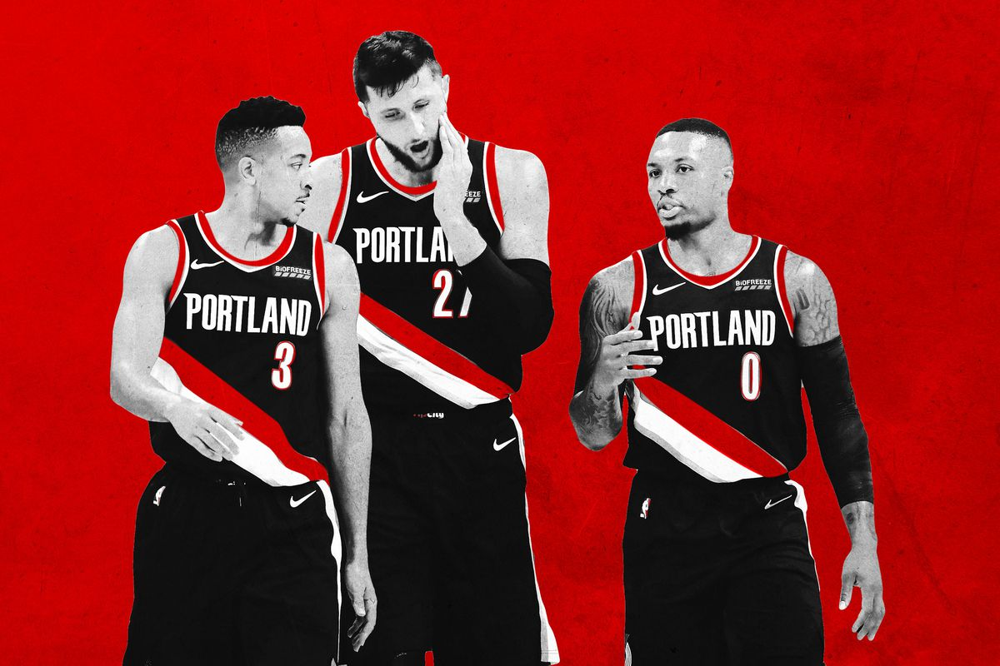

The Portland Trail Blazers (colloquially known as the Blazers) are an American professional basketball team based in Portland, Oregon. The Trail Blazers compete in the National Basketball Association (NBA) as a member of the league's Western Conference Northwest Division. The team played its home games in the Memorial Coliseum before moving to Moda Center in 1995 (called the Rose Garden until 2013). The franchise entered the league as an expansion team in 1970, and has enjoyed a strong following: from 1977 through 1995, the team sold out 814 consecutive home games, the longest such streak in American major professional sports at the time, and only since surpassed by the Boston Red Sox.